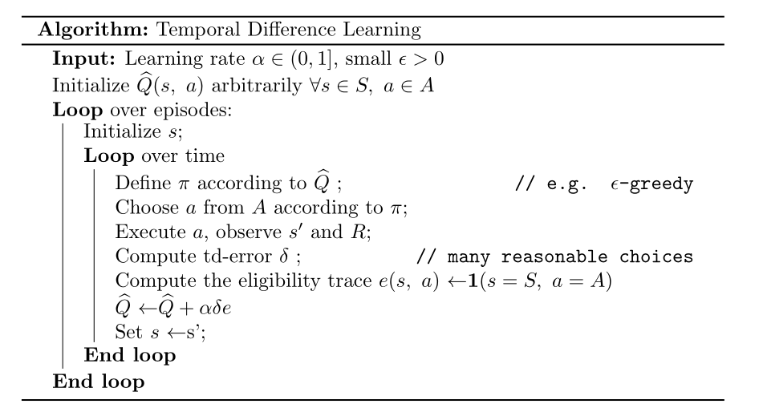
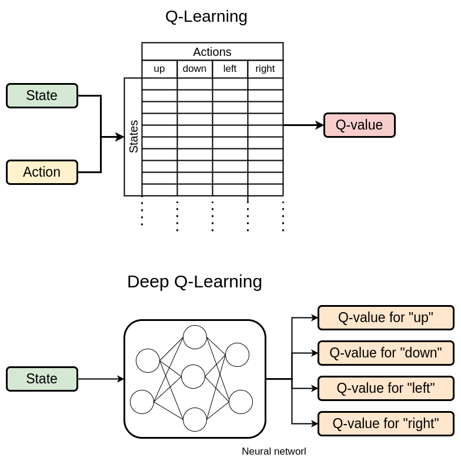
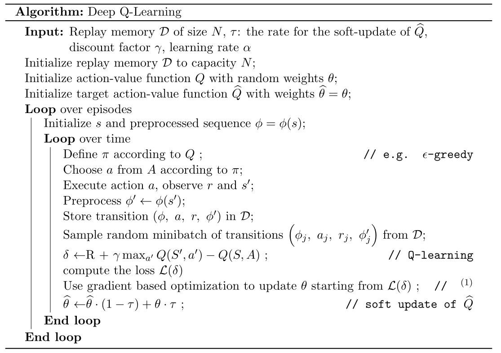
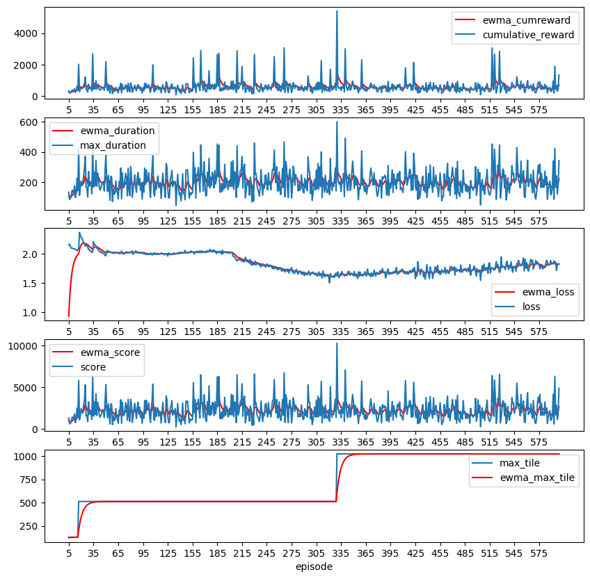

The board in the environment is represented as a numpy.array(4,4) of integers (powers of 2), with 0 representing an empty tile.
The agent will interact with the environment through the step(action) function:
def step(self, action, verbose=False):"""_Performs the action passed as argument, checks if the game is over and if it is not, adds a random tile to the board and updates the environment attributes. The reward is the increase of the score._ Args: action (_int_): _The action to perform. 0: UP, 1: DOWN, 2: LEFT, 3: RIGHT_ verbose (bool, optional): _If True, prints relevant information about the step taken (debugging purposes)_. Defaults to False. Returns: _self.board (np.array((4,4))): _The new board after the action is performed_ _delta (int)_: _The increase of the score after the action is performed_ _done (bool)_: _True if the game is over, False otherwise_ _won (bool)_: _True if the game is won (2048 reached), False otherwise_ _{}_: _Empty dictionary (required by the gym.Env class)_ """ delta =0 board =self.board.copy()if action ==0: delta =self._UP()if action ==1: delta =self._DOWN()if action ==2: delta =self._LEFT()if action ==3: delta =self._RIGHT()ifself._is_changed(board):self._add_random_tile()self.legit_actions =self.get_legit_actions()else:print("Invalid action taken!")# Check if the game is over (no more valid moves or 2048 tile reached) done, won =self._is_game_over()if won:ifself.log_rewards: delta +=11else: delta +=2048if verbose:# prints some information about the step takenreturnself.board, delta, done, won, {}
Example of an action called by the step(action) function:
def _UP(self):"""_ Performs the action "UP". all the tiles are moved to the most upper position they can reach. If two tiles with the same value are in the same column, they are summed and the score is updated._ Returns: _int_: _The sum of the values (or their log2 values if self.log_reward is True) of the new generates tile performing the action_ """ delta =0for i inrange(4): col =self.board[:, i] col = col[col !=0] col = np.concatenate((col, np.zeros(4-len(col))))for j inrange(3):if col[j] == col[j+1]: col[j] = col[j] *2self._update_score(col[j])ifself.log_rewards and col[j] !=0: delta += np.log2(col[j])else: delta += col[j] col[j+1] =0 col = col[col !=0] col = np.concatenate((col, np.zeros(4-len(col))))self.board[:, i] = colreturn deltadef _can_UP(self):""" Checks if an action "UP" could change the board_ Returns: _Bool_: _True, if "UP" is a legit action, False otherwise_ """for i inrange(4): col =self.board[:, i]for j inrange(1, 4):if col[j] !=0:if col[j -1] ==0or col[j -1] == col[j]:returnTruereturnFalse
Reinforcement Learning Framework
Action space
The action space \(A\) is discrete and finite
However (in our implementation) it is not constant, since the set of legal actions changes at each step
\[
A(s) \subseteq \mathcal{A} = \{\text{up},\ \text{down},\ \text{left},\ \text{right}\} \qquad \forall s \in S
\]
All the action are deteministic\(\Rightarrow \Pr(\text{action}=\text{execution})=1\)
State space
The state space \(S\) is discrete and finite
The cardinality \(|S|\) is not trivial to compute, but it is upper bounded by \(12^{16}\)
the estimation does not take into account some impossible states, but it’s good enough for giving an idea about how huge is \(|S|\)
Reward
In the original game, the score is incremented by the value of the tile generated merging two tiles by a move
This is a good starting point, but we’ve made various attempts of reward shaping to improve the learning process
considered the \(\log_{2}(\cdot)\) of the score increment: in order to homogenize the reward scale
penalization at each step: ideally this should enchourage the agent to merge tiles as soon as possible
These combinations of rewards shaping are controlled by the log_rewards of the environment and the penalize parameter of the agent
Solving the problem
Model-based or model-free?
The problem is so complex that we can state we have no a-priori knowledge about the transition probabilities \(p(s'|s,a)\)
This makes unfeasible the computations of the expected reward
\(\Rightarrow\) we have to use a model-free approach
\(S_0,\ A_0,\ R_1,\ S_1,\ A_1,\ R_2,\ \dots\)
TD-learning
We have used an Action-value method, the Temporal-Difference Learning, which is a model-free approach to estimate the optimal action-value function \(Q*(s,a)\)
There are many possible variations of the TD-learning algorithm (eg. Montecarlo, TD(0), TD(\(\lambda\)), …)
we have decided to use the TD(0) algorithm because even if it’s the simplest one, it’s also the most cheap in terms of computational cost.
TD-learning

if we compute the TD-error as \(\delta = R + \gamma\max_{a'}Q(S',a') - Q(S,A)\), we get what is called Q-learning algorithm.
DQN - Q-learning with Neural Networks
Why DQN?
In the original Q-learning algorithm, the action-value function is represented as a table updated at each step:
\(Q : S \times A \to \mathbb{R}\)
However, the state space is huge (upper bounded by \(12^{16}\)) and it makes not feasible the computation of the Q-table for both memory and computational cost \(\to\)curse of dimensionality
Solution:\(\to\) use a function approximator to represent the Q-function
Deep Q-Network: Q-learning with Neural Networks \(Q : S \to \mathbb{R}^{|A|}\)
DQN & Q-learning

Then the action \(a\) is chosen as \(\arg\max_{a}Q(s,a)\)
DQN Algorithm

\(\ ^{(1)}\): The loss function
The loss function usually used in DQN is the Mean Squared Error between the target and the prediction
However, we have decided to use the Huber Loss instead, because it is less sensitive to outliers
Training a DQN agent for 600 episode, with progressive log-reward and entropy regularization we get:

Test performance
We’ve set as the baseline the performance of a random agent. Our trained DQN agent shows a significant improvement (even if it still was not able to reach the 2048 tile):